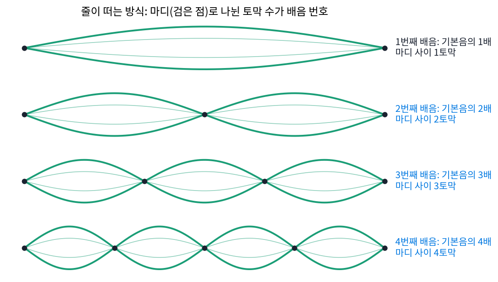
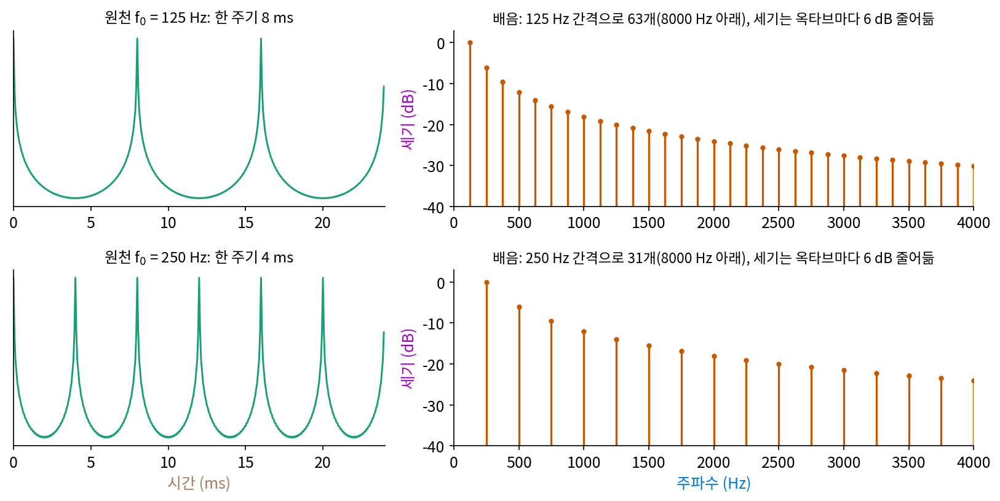

음성: 소리를 스펙트럼으로 듣기
이 장의 물음
주기 함수는 주파수가 정수배인 물결의 합으로 적을 수 있었고(푸리에 급수), 칸으로 적은 신호는 고속 푸리에 변환으로 순식간에 물결의 세기로 바꿀 수 있었다. 짧은 구간마다 윈도우를 대고 세기를 구해 시간 순으로 늘어놓으면 「언제 어떤 물결이 울렸는지」도 함께 볼 수 있었다. 이 도구들을 사람 목소리에 대 보자. 전화기 너머로 친구가 「아」라고 해도, 「이」라고 해도 우리는 목소리의 주인을 알아듣고, 같은 사람이 같은 높이로 낸 두 모음도 바로 가른다. 소리의 물결 어디에 「누구」와 「어떤 모음」이 들어 있을까?
ML에서도 같은 물음이 나온다. 음성 인식 모델 Whisper 는 녹음의 숫자를 그대로 받지 않는다. 짧은 구간마다 주파수별 세기를 구하고, 그 세기를 사람 귀에 맞췄다는 눈금으로 80칸이나 128칸에 묶은 뒤 로그를 취해 넣는다. 왜 하필 귀의 눈금일까? 귀의 눈금은 무엇이 다를까?
이 장은 다음 물음에 차례로 답한다.
- 같은 높이의 「라」를 피아노와 바이올린이 내면 왜 다르게 들릴까? 음높이는 물결의 무엇이 정할까?
- 같은 사람이 같은 높이로 「아」와 「이」를 내면, 물결의 무엇이 달라질까?
- 말소리를 시간과 주파수 위에 그린 그림에서 무엇을 읽을 수 있을까? 윈도우 길이는 무엇을 보이고 무엇을 감출까?
- 사람 귀는 높은 음과 낮은 음을 같은 촘촘함으로 가를까? 그렇지 않다면 신경망에 넣을 그림의 세로축을 어떻게 잡아야 할까?
배음: 음높이 하나에 물결 여럿
피아노와 바이올린이 같은 「라」를 낸다. 조율기에 대면 둘 다 440 Hz(1초에 440번 되풀이)를 가리킨다. 그런데 눈을 감고 들어도 어느 악기인지 안다. 주파수가 같은데 무엇이 다를까? 소리굽쇠의 「라」는 거의 사인 물결 하나지만, 피아노 소리를 녹음해 파형을 그려 보면 사인 물결처럼 매끈하지 않다. 그래도 2.27 ms(1/440초)마다 같은 모양이 되풀이된다. 되풀이되는 함수는 주파수가 정수배인 물결들의 합으로 적을 수 있었다. 그렇다면 「라」 하나 속에는 440 Hz 말고도 880 Hz, 1320 Hz, … 의 물결이 들어 있고, 악기마다 다른 것은 그 물결들의 세기가 아닐까?
역사: 귀도 목소리도 시원찮던 사람이 이름 붙인 물결
한 음 속에 섞인 정수배 물결에 처음 이름을 붙인 사람은 프랑스의 소뵈르(Joseph Sauveur)다. 그는 어려서 일곱 살 무렵까지 말을 하지 못했고, 평생 말이 어눌했다. 그를 기리는 글을 쓴 퐁트넬(Fontenelle)은 소뵈르가 목소리도 음악을 듣는 귀도 없어서 남의 목소리와 귀를 빌려야 했다고 적었다. 그런 사람이 소리를 학문으로 다루겠다고 나섰다. 그는 음악의 아름다움을 따지는 일과 떼어 「소리 그 자체」를 다루는 분야를 세우자며 그 이름을 「아쿠스티크(acoustique)」라 했다. 「음향학(acoustics)」이라는 말이 여기서 왔다.
귀를 믿을 수 없으니 그는 셀 수 있는 것을 찾았다. 반음 하나만큼(진동수 비 25 : 24) 어긋나게 맞춘 오르간 관 두 개를 함께 불면, 소리가 1초에 일정한 횟수만큼 커졌다 작아졌다 하는 맥놀이가 생긴다. 맥놀이의 횟수는 두 관의 진동수 차이와 같으므로, 맥놀이를 세면 관 하나의 진동수를 절댓값으로 알 수 있다. 그는 이렇게 해서 길이 다섯 피에(파리의 옛 길이 단위)짜리 열린 관이 1초에 100번 남짓 떤다고 어림했다.
1701년 파리 학술원 모임에서 소뵈르는 줄 하나가 전체로 한 번 떠는 것 말고도, 길이가 같은 토막 둘, 셋, 넷으로 나뉘어 더 빠르게 떨 수 있다고 설명했다. 토막 사이의 움직이지 않는 점을 「마디(noeud)」, 이렇게 나는 높은 소리를 「배음(sons harmoniques)」이라 불렀다. 이듬해 그는 배음이 악기 소리 어디에나 섞여 있고 소리의 맛깔(음색)을 좌우한다고 주장했다. 줄을 떠는 모양을 보면, 토막이 k개면 한 토막의 길이가 1/k이라서 k배 빠르게 떤다.

125 Hz 원천의 물결 줄
목소리에서 「줄」 구실을 하는 것은 목 안의 성대다. 숨이 지나가며 성대가 1초에 125번 열렸다 닫히면(성인 남성 목소리 근처의 값), 공기가 8 ms마다 한 번씩 톡톡 밀려 나온다. 이 소리를 이 장에서는 원천이라 부르고 스크립트로 합성한다. 되풀이 간격이 8 ms이므로 원천은 125 Hz와 그 정수배 물결의 합이다. 샘플링 레이트 16000 Hz로 적으면 담을 수 있는 가장 빠른 물결이 8000 Hz이고, 그 아래에 125 Hz 간격의 물결이 63개 들어간다. 이 장의 원천은 k번째 물결의 세기를 1/k로 두었다. 성대의 펄스와 입술에서 소리가 퍼져 나가는 효과를 함께 본 흔한 단순화로, 주파수가 두 배가 될 때마다(한 옥타브마다) 세기가 6 dB씩 준다. dB(데시벨)는 세기의 비를 로그로 잰 단위로, 진폭이 절반이면 약 −6 dB, 10분의 1이면 −20 dB다. 125 Hz를 0 dB로 두면 250 Hz는 −6.0 dB, 1000 Hz는 −18.1 dB, 4000 Hz는 −30.1 dB다.

기본 주파수 f₀로 되풀이되는 소리를 물결로 나눈 것은 다음과 같다.
기본 주파수의 정수배인 이 물결들을 배음 (기본 음높이의 정수배 물결 / harmonic)이라 한다. k = 1인 첫째 배음을 기본음이라고도 부른다. 「배음」을 이 책의 다른 말 「조화」(구면 조화의 조화)와 섞지 않는다. 피아노와 바이올린의 「라」는 배음 줄의 간격(440 Hz)이 같고, 줄마다의 세기 ak가 다르다. 그렇다면 우리가 「음높이」라고 듣는 것은 첫째 배음의 주파수일까, 줄 사이의 간격일까? 원천에서는 둘이 같은 값이라 가를 수 없다. 둘을 떼어 보는 실험은 아래 문제 2에서 한다.
ML에서: 파형에서 바로 음높이를 읽는 신경망
녹음에서 음높이를 읽는 일은 노래방 채점부터 음성 합성까지 쓰임이 많아서 오래된 연구 주제다. 예전 방법들은 파형을 조금씩 밀어 자기 자신과 겹쳐 보는 자기상관처럼, 사람이 고안한 함수에서 되풀이 간격의 후보를 고르고 규칙으로 다듬었다. 2018년 뉴욕 대학교의 김종욱(Jong Wook Kim)과 동료들이 내놓은 CREPE 는 이 일을 합성곱 신경망에 맡겼다. 16 kHz로 잰 파형 1024칸(64 ms)을 그대로 받아, 32.70 Hz(피아노의 가장 낮은 도 근처)부터 1975.5 Hz까지를 20센트(반음의 5분의 1) 간격으로 나눈 360칸 가운데 어느 칸인지를 내놓는다. 논문은 이 신경망이 정답에서 10센트 안에 드는 비율이 90%를 넘는다고 보고했다. 사람이 고안한 방법들이 자주 내는 음높이 오류는 무엇이고, 그런 오류가 CREPE 의 360칸 위에서 몇 칸이나 되는지는 아래 문제 3에서 따진다.
문제 1. 기타 줄을 살짝 짚으면
기타의 다섯째 줄은 「라」(110 Hz)에 맞춘다. (가) 이 줄이 내는 소리의 배음 가운데 1000 Hz 아래에 드는 것을 모두 적어라. (나) 줄의 한가운데를 손가락으로 살짝 대기만 하고 튕기면(누르지 않는다), 한가운데가 마디가 될 수 없는 떨림은 죽는다. 남는 배음은 무엇이고, 들리는 음높이는 얼마인가? (다) 줄 길이의 1/3 지점을 대면? (위젯 1의 「문제 1 불러오기」는 (나)의 소리를 들려준다.)

(가)는 110의 배수니까 110, 220, 330, … 990 Hz까지 아홉 개요. (나)는 가운데를 누르니까 줄 길이가 반이 돼서 220 Hz요.

민준 학생, 누르는 것과 살짝 대는 것은 달라요. 살짝 대면 줄 길이는 그대로고, 그 점만 움직이지 못하게 돼요. 토막이 하나인 떨림, 둘인 떨림, 셋인 떨림 가운데 한가운데가 움직이지 않는 것은 어느 것이죠?

토막이 하나면 가운데가 제일 크게 흔들리니까 죽고, 둘이면 가운데가 마디라 살아요. 셋이면… 마디가 1/3, 2/3 지점이라 가운데는 흔들리니까 죽고요.
넷, 다섯도 이어서 해 보면요?

짝수 번째만 남네요. 220, 440, 660, 880 Hz…. 답은 220 Hz로 같은데 이유가 달랐네요.

남은 줄의 간격이 220 Hz라서 220 Hz로 들리는 거야. (다)는 1/3 지점이 마디인 떨림만 남으니까 3의 배수 번째, 330, 660, 990 Hz고, 330 Hz로 들려.

그래요. 이렇게 내는 소리를 기타에서는 하모닉스라고 불러요. 줄 길이는 그대로인데 배음 줄을 솎아 내서 음높이를 바꾼 거죠.

조별 발표에서 짝수 번 조만 남기면 발표 간격이 두 배로 벌어지잖아요. 짝수 번째 배음만 남으면 줄 간격이 110 Hz에서 220 Hz로 벌어지는 것과 같은 모양이네요.
문제 2. 기본음이 빠진 소리
600 Hz, 800 Hz, 1000 Hz 세 물결을 같은 세기로 더한 소리가 있다. (가) 이 소리는 몇 ms마다 되풀이되는가? 사람에게는 몇 Hz로 들릴 것 같은가? (나) 유선 전화는 대략 300~3400 Hz 만 전한다. 110 Hz 목소리의 남자가 전화하면 몇 번째부터 몇 번째 배음까지 전해지는가? 그래도 목소리가 한 옥타브쯤 높게 들리지 않는 까닭은? (다) 세 물결을 모두 50 Hz씩 올려 650, 850, 1050 Hz로 만들면, 소리가 정확히 되풀이되는 간격은 얼마이고, 자기상관으로 찾은 「가장 짧은 되풀이 후보」는 얼마인가? (위젯 1의 「문제 2 불러오기」에서 기본음을 뺀 소리를 들어 보자.)
(가)는 세 주파수의 최대공약수가 200 Hz니까 5 ms마다 되풀이돼. 그런데 가장 낮은 물결이 600 Hz니까 600 Hz로 들리지 않을까?
위젯 1에서 200 Hz 원천을 두고 「기본음 빼기」를 눌러 보세요. 음높이가 바뀌어 들리나요?

소리 맛은 조금 얇아지는데 음높이는 바뀌지 않고 200 Hz로 들려요. 200 Hz 물결이 없는데도요. 귀는 줄의 간격을 듣는 거네요.
(나)는 300 Hz 위의 첫 배음이 3번째 330 Hz, 3400 Hz 아래 마지막이 30번째 3300 Hz예요. 110 Hz는 아예 안 전해지는데 간격은 110 Hz 그대로라서 같은 높이로 들리는 거고요.

(다)를 봐요. 650, 850, 1050 Hz는 간격이 여전히 200 Hz예요. 정확히 되풀이되는 간격은요?

최대공약수가 50 Hz라서 20 ms마다요. 간격만 들린다면 이것도 200 Hz로 들려야 하는데… 스크립트로 자기상관을 구하면 20 ms에서 1.000이고, 그보다 짧은 봉우리 가운데 가장 큰 것은 4.688 ms(r = 0.944)예요. 0.9를 넘는 가장 짧은 봉우리를 고르면 213.3 Hz요. 200 Hz가 아니네요.

213.3 Hz는 가운데 물결 850 Hz를 4로 나눈 212.5 Hz랑 가까워. 간격만 보는 게 아니라 물결들이 「몇 번째 배음인 척」하는지도 보는 거구나. 정수배라는 조건을 깨니까 간격과 들리는 높이가 갈라졌어.
그래요. 이렇게 물결을 고르게 밀어 올리면 들리는 음높이도 조금 따라 올라간다는 것이 슈하우턴(Johannes F. Schouten)과 동료들의 1962년 실험 결과예요. 원천처럼 배음이 정수배로 정확히 서 있으면 간격과 되풀이와 들리는 높이가 모두 하나로 맞아요.

해석학에서 수열 셋의 공통 주기를 찾을 때 최소공배수로 가던 거랑 같은데, 정수가 아닌 비율이 끼면 공통 주기가 엄청 길어지던 게 생각나.
문제 3. 음높이 추정기의 옥타브 틀림
125 Hz 「아」(위젯 2의 「아」와 같은 소리)를 1024칸(64 ms) 잘라 정규화 자기상관 r(τ) 를 구한다. 지연 τ 칸만큼 밀어 자기 자신과 견준 값으로, 1이면 똑같다. (가) τ = 128칸(8 ms)과 256칸(16 ms)에서 r 은 얼마인가? 「r 이 가장 큰 τ」를 고르는 추정기는 무엇을 답할까? (나) 목이 쉬어 성대가 한 번은 세게, 한 번은 약하게 번갈아 닫히면(세기 ±20%, ±40%) r(128) 과 r(256) 은 어떻게 되는가? 「최댓값의 0.9 배를 넘는 가장 짧은 봉우리」 규칙은 무엇을 답하는가? (다) 한 옥타브 틀림은 CREPE 의 360칸 위에서 몇 칸 차이인가?
(가)는 128칸에서 r = 1.000이고 256칸에서도 1.000이에요. 같으니까 둘 다 정답 아니에요? 125 Hz든 62.5 Hz든요.
8 ms마다 되풀이되는 소리는 16 ms마다도 되풀이되죠. 32 ms마다는요?
그것도요. 주기의 배수는 다 r = 1이네요. 「가장 큰 r」만 보면 후보가 줄줄이 같은 점수예요. 그래서 실제 추정기는 가장 짧은 것을 고르는 규칙을 붙이나 봐요.
(나)는 세기 ±20%면 r(128) = 0.947, r(256) = 1.000이야. 두 주기를 묶어야 진짜로 똑같아지니까. 최대를 고르면 256칸, 62.5 Hz로 한 옥타브 아래를 답해. 0.9 규칙은 0.947이 0.9를 넘으니 128칸, 125 Hz로 맞히고.
±40%면요?

r(128) = 0.802예요. 0.9 아래로 떨어졌네요. 그럼 0.9 규칙도…
128칸을 못 고르고 256칸, 62.5 Hz를 답하겠네.
사람 귀에는 어떻게 들릴까요?
여전히 125 Hz 목소리로 들릴 텐데요. 규칙의 문턱을 어디에 두느냐에 따라 맞고 틀림이 갈려요.

(다)는 한 옥타브가 1200센트니까 20센트 칸으로 60칸이에요. 360칸 가운데 60칸이면 엄청 큰 틀림이네요. 문턱을 사람이 고르는 대신 녹음 수천 개로 「사람이 들은 답」을 배우게 하면 이런 애매한 경우의 판단도 데이터에서 배우겠죠. CREPE 가 노린 게 그거고요.
그래요. 주기의 배수가 모두 같은 점수를 받는 것은 자기상관의 구조라서 피할 수 없어요. 그 동점을 어떻게 깨느냐가 음높이 추정의 어려움이에요.
실험 보고서에서 그래프 눈금을 한 자리 잘못 읽으면 값이 딱 열 배 틀리는 것처럼, 옥타브 틀림도 딱 두 배라서 오히려 티가 나네요.